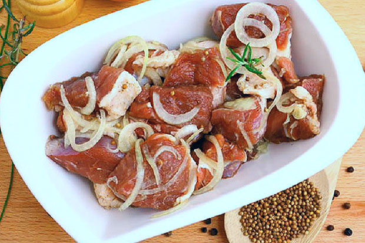

Рецепты
Маринад для шашлыка
Какой самый лучший маринад для шашлыка и как его правильно приготовить, чтобы мясо получилось сочным и нежным, тающим во рту? Секрет вкусного шашлыка заключается не только в мясе, но и в маринаде. Именно от него будет зависеть конечный результат.
Для приготовления идеального и вкусного шашлыка, если вы решили готовить его из свинины, используйте корейку или котлетную часть, а если из говядины – то рекомендуется вырезка. Мясо должно быть молодым, немного красноватым, мягким и без прожилок.
Помните одно, что главный секрет вкусного мяса жаренного на открытом огне – это правильно подобранный маринад и ваше настроение.
Перечень продуктов на 2 кг мяса:
- Репчатый лук – 4-5 головки средних размеров
- Черный молотый душистый перец – 1/2 ч. ложка
- Сухие пряные травы – 1 ст. ложка
- Соль – 1 ст. ложка без горки
- 9% столовый уксус – 2-4 ст. ложки
Важный момент: во всех случаях соль и уксус рекомендуется добавлять в уже маринованное мясо непосредственно перед приготовлением.
В отличие от множества других рецептов, маринованное мясо с луком – самый верный и простой вариант. Это универсальный способ, который отлично подойдет, как для говядины, так и для свинины. Преимущество на лицо, здесь репчатый лук служит не только усилителем вкуса, но и вступает в роли расщепителя. В процессе, впитав в себя луковый сок, мясо при жарке сохраняет часть сока и не пересыхает.
Пошаговый рецепт:
- Нарежьте репчатый лук полукольцами, для эффективности можно измельчить на блендере.
- Поместите нарезанные куски мяса и подготовленный лук в посуду с глубоким дном.
- Добавьте душистый черный перец, смесь сухих трав: кориандр, укроп, тимьян, розмарин, чеснок и другие.
- Разминая руками, тщательно размешайте, прикройте полиэтиленом и оставьте мариноваться на 2 часа.
- Спустя время, добавьте соль, влейте уксус, еще раз все основательно размешайте, остается лишь нанизать на шампуры и можно переходить к процессу приготовления.
Проще купить специальный набор специй для шашлыка, продается в небольшой упаковке, в составе чего уже присутствуют все основные компоненты.